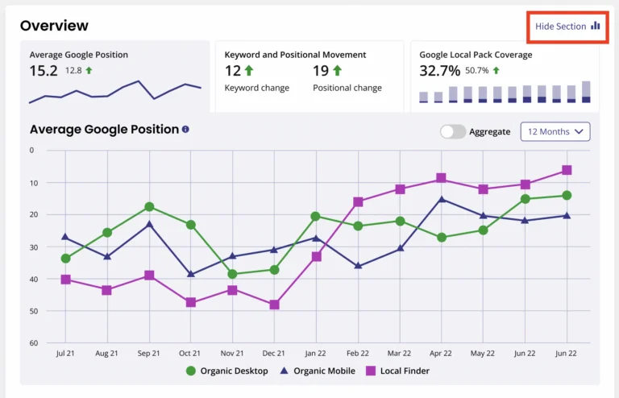

Client reports are a crucial aspect of any digital marketing agency’s workflow. They not only demonstrate the value of your services but also help in building trust and transparency with clients.
In this blog, we will explore how to create effective client reports with BrightLocal, ensuring that you provide your clients with the information they need to make informed decisions and see the impact of your work.
Step 1Choose Your Metrics Wisely
Before diving into report creation, it’s essential to determine which metrics are most relevant to your client’s goals and the services you provide. BrightLocal offers a wide range of metrics, including local search rankings, online visibility, citation tracking, and more. Select metrics that align with your client’s objectives and KPIs to keep the report focused and actionable.
BrightLocal provides a feature called Location Summary, which offers a consolidated view of essential local search data specific to a particular business location. This summary can be easily customized and shared with clients. You have the flexibility to remove any unnecessary data from the Location Summary page or even exclude the Location Summary page entirely from the white label dashboard.
You can generate reports for internal purposes without including them in the white-label dashboard. Some local SEO experts suggest keeping rank tracking internal while still running those reports for your own monitoring.
In certain reports, specific data can be hidden from the white-label versions as well. For example, the Local Rank Tracker report allows you to hide certain elements.

The Local Search Audit report permits the omission of any sections you deem unnecessary. Simply go to ‘Edit Report Settings’ and use the checkboxes in Report Sections to choose what you don’t want to be included.
Step 2Set Clear Goals and Benchmarks
Establish clear goals and benchmarks with your clients from the outset. What are they hoping to achieve with your local SEO services? Are they looking to increase website traffic, boost online visibility, or improve their local search rankings? By setting specific goals, you can tailor your reports to showcase progress and success in a meaningful way.
Step 3Customize Your Report Templates
BrightLocal provides customizable report templates that allow you to tailor the report’s appearance and content to your client’s brand and preferences. You can add your agency’s logo, choose color schemes for all BrightLocal reports, and arrange the report sections to highlight the most critical information first. Customization helps create a professional and branded report that leaves a lasting impression.
Step 4Include Actionable Insights
Don’t just present data; provide actionable insights and recommendations. Use the metrics and data from BrightLocal to explain what the numbers mean for your client’s business. For example, if local search rankings have improved, explain how this translates into increased visibility and potentially more leads. Offering actionable insights demonstrates your expertise and value as a digital marketing partner.
The Notes Module in Brightlocal is a useful way to leave notes for your clients in their report dashboard or Location Summary page. They allow you to provide further value beyond statistical reporting by adding your expert insights, explanations, and suggestions alongside the charts and graphs. You can also use the Notes Module to leave internal notes for yourself or your team and hide these from your clients.